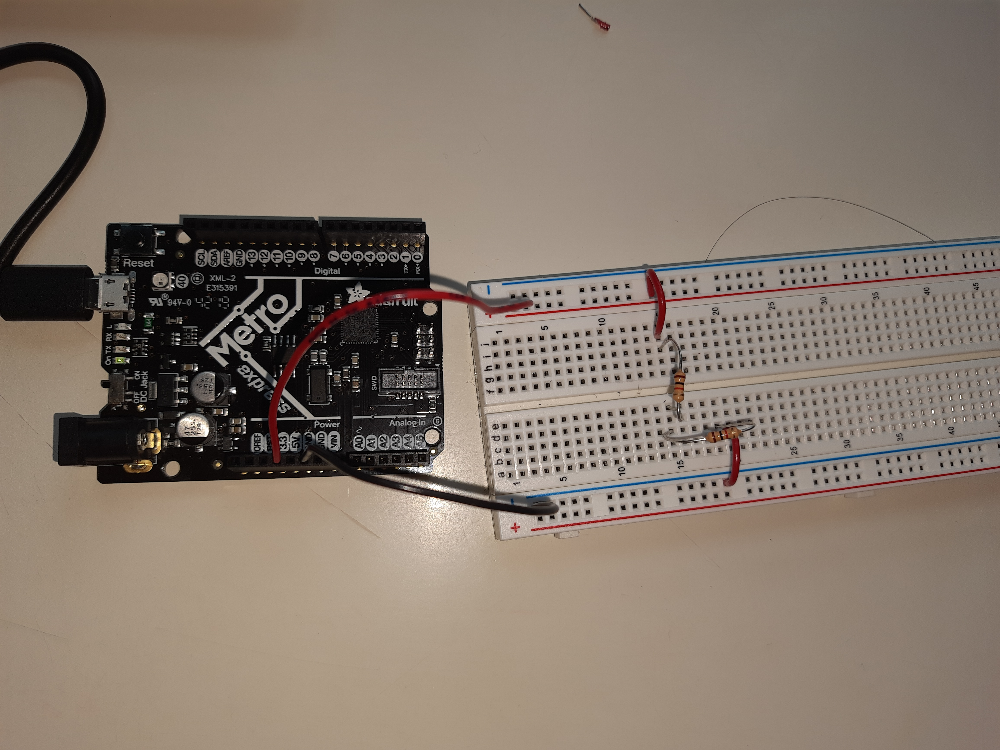

Electronics & Tools
Introduction to Microcontrollers, Electronics and test equippment, Tinkercad Simulation
INTRODUCTION TO MICROCONTROLLERS
Today's class was started off by Nathan with a lecture regarding microcontrollers. Over the course of time, I learnt that a microconntroller is going to be an imperative part of my final project. Any gadget or equippment that does things like measuring, controlling, displaying and calculating values usually contains a microcontroller. The most important commponent of a microcontroller is the Central Processing Unit, with a word length ranging from 4-bit to 64-bit. Most microcontrollers (including Arduino) can input and output analog signals as well as digital signals.
An analog signal is one that can take on any number of values, unlike a digital signal which has only two values: HIGH and LOW. Here is a link to the page on Microcontrollers.
ELECTRONICS AND TEST EQUIPPMENT
Here is a link to the page on Electronics Basics.
This reading focussed on various components of a circuit and the application of a multimeter in reference to that component. After the given table, the reading talks about voltage, voltage dividers, the use of a multimeter and a breadboard and how to measure current using Ohm's law.
I started off by making a simple LED circuit. Building this circuit was not very challenging for me. We had a lot fo resistors but I used a 470 ohm resistor which worked perfectly well. Here is the Arduino code I used:
int led = 13; // the pin the LED is connected to
void setup() {
pinMode(led, OUTPUT) // Declare the LED as an output
}
void loop() {
digitalWrite(led, HIGH) // Turn the LED on
}
Following is my TinkerCAD Diagram for this circuit:
.png)
After this, we were to make a circuit for the "blink" program. This is the code I used:
/*
Blink
Turns on an LED on for one second, then off for one second, repeatedly.
Most Arduinos have an on-board LED you can control. On the UNO, MEGA and ZERO
it is attached to digital pin 13, on MKR1000 on pin 6. LED_BUILTIN is set to
the correct LED pin independent of which board is used.
If you want to know what pin the on-board LED is connected to on your Arduino model, check
the Technical Specs of your board at https://www.arduino.cc/en/Main/Products
This example code is in the public domain.
modified 8 May 2014
by Scott Fitzgerald
modified 2 Sep 2016
by Arturo Guadalupi
modified 8 Sep 2016
by Colby Newman
*/
// the setup function runs once when you press reset or power the board
void setup() {
// initialize digital pin LED_BUILTIN as an output.
pinMode(LED_BUILTIN, OUTPUT);
}
// the loop function runs over and over again forever
void loop() {
digitalWrite(LED_BUILTIN, HIGH); // turn the LED on (HIGH is the voltage level)
delay(1000); // wait for a second
digitalWrite(LED_BUILTIN, LOW); // turn the LED off by making the voltage LOW
delay(1000);
// wait for a second
}
On playing around with the code a little bit, I figured out that I can change the delay time of the blink. I can also aadjust the brightness of the LED by including the following line in the void loop:
analogWrite (9,230);
The value in place of "230" could range from 0 to 255 in increasing order of brightness. At this point, it is also important to shift the wire to Pin 9 on the MetroBoard.
Readings & Documentation
This week's readings assignment was Chapter 8 of Making Things Move. This reading taught me how I could use simple machines to convert plain rotary motion into more complex forms of motion.
Cranks - This is basically a liver attached to a rotating shaft. A very good example of a crank is a sterring wheel.
Following this, I learnt about cams and followers and different types of cams. These are used if I want two or more objects to move in an irregular periodic motion.
The last component were linkages which are used to transfer a type of motion from one motor to another. All these applications were demonstrated in various projects mentioned therafter.
This reading developed in me a curiosity to explore. I soon found myself oepning up old toys and unscrewing spare machine parts to examine these simple machines.
Assignment: Circuits
Lab Section, Double Resistor Circuit, Potentiometer Circuit
LAB SECTION
During the lab section, we were learning more about resistors and I decided to execute the first part of my assignment which was to use a voltage divider circuit. I used two 1k ohm resisors to divide the voltage.

After I had finished building this circuit, I used the multimeter to measure voltage. The voltage before the resistors was 3.3V, whcih is correct because my wire to the positive end was connected to 3.3V supply on the MetroBoard. After the first resistor, the Voltage dropped to 1.65V, one half of the initial voltage. The voltage after the second resistor became 0V.
After using the multimeter to measure the voltage, we were supposed to find the current using Ohm's Law. This was fairly simple for me because I had studied Ohm's law in both sophomore year and senior year. Moreover, the referred reading gave me a quick recap. So I used Ohm's Law to calculate the current between the two resistors. The voltage there was 1.65V and I had used a 1000 ohm resistor, the current would be 1.65/1000 = 0.00165A. This was concluded using the formula V = IR.
WEEKLY ASSIGNMENT
Our assignment for the week was to work through a fusion 360 tutorial and document our learning. The following are the video tutorials I used along with my learning from each of these tutorials.
This tutorial helped me change the standard units for all constructions, sketching different kinds of objects and more importantly using siple tools such as - trim, mirror, tanget and dimensions.
After this, I used the video lessons provided by Autodesk to explore Fusion 360 further. These lessons were divided into 16 short video lessons.
The first video was a brief overview of the capabilities of Fusion 360 - including design, prototyping, animations, renderings and all possibilities along with it.
The second part of our assignment was to select atleast three components from the kit, measure them using callipers and model them in Fusion 360. We were to create an assembly of these components and document our work on this webpage. I unfortunately have not received my kit yet, which is why I have not modelled the components but I will have it done as soon as I receive my kit.


`